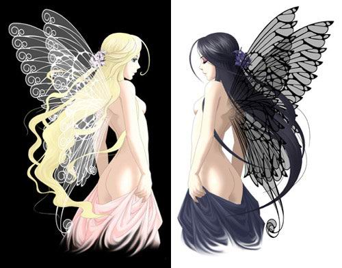

Forums galactiques > Assemblée Galactique : diplomatie officielle > Modification de la constitution
OUI | 55 | |
NON | 14 | |
BLANC | 14 | |
Total : 83 vote(s) | ||
Pages : 1 2
| Winston Respect diplomatique : 209  11/07 ETU 09:27 | Score : 10 Détails J'ai l'honneur aujourd'hui de vous présenter les modifications de la constitution, afin d'être fidèle au projet que j'avais proposé. Cordialement, Smith.
Les modifications sont présentées en gras, pour le texte original, voir les archives du gouvernement. Amendement : Titre II Article 4 : Le Président est élu pour une durée de 30 jours à compter de la clôture des élections. Article 6 : Le Président nomme les différents ministres à l’exception du Minsitre de la Justice et du Président du Conseil législatif. Chaque Ministre est chargé d'un domaine précis et individuel défini par le Président. Un Ministre peut être substitué par une Institution contrôlée par au moins un membre du Gouvernement. Les Ministres ou Institutions doivent donner leur approbation pour faire partie intégrante du Gouvernement. Le Président met fin à la fonction des Ministres sur la présentation par ceux-ci de leurs démissions. Titre IV Article 17 : Le Conseil Législatif doit recueillir les propositions, les modifications ou les abrogations de loi ou de décrets de tous les commandants ainsi que celles du Gouvernement. Si la proposition est illisible, le Conseil la renvoie au F.O.U. pour la faire corriger. Il est ensuite du travail du Conseil de retravailler la proposition, puis de la présenter au Président, qui s'il donne son accord, propose un referendum au Sénat Galactique. En cas de veto du président, le conseil du peuple peut l’annuler par un vote aux trois cinquièmes. Il est composé d'un Président du Conseil Législatif nommé par le Conseil du Peuple à la majorité des trois cinquièmes et de deux conseillers nommés par le président du Conseil Législatif. Titre V Article 20 : Le pouvoir judiciaire repose sur les juges. Ceux-ci sont choisis par le Ministre de la Justice lui-même nommé par le Conseil du Peuple à la majorité des trois cinquièmes. Ils sont inamovibles. Le Conseil du Peuple peut par un vote à la majorité des quatre cinquièmes renvoyer un juge incompétent. Les juges doivent être impartiaux et devront chercher toutes les preuves à charge et à décharge. Les parties devront les aider dans cette tâche. Titre VIII Article 29 : La présente Constitution ne peut être modifiée que par la procédure suivante : le Conseil du Peuple, le Président, les Ministres ou un membre du Conseil Législatif proposent une loi au Conseil Législatif. Le Conseil législatif ratifie la modification et la présente au Conseil du Peuple ainsi qu’au Président. Si la modification est approuvée par le Conseil du Peuple aux trois cinquièmes, le président la soumet directement au vote devant le Sénat Galactique par la voie du référendum avec pour choix OUI, NON ou BLANC et le projet complet de modification sans influence aucune et avec une durée de sept jours. La Constitution est alors modifiée quarante-huit heures après la clôture du vote si elle est acceptée par la majorité non absolue. | ||
| La Cité des Vissäyan Respect diplomatique : 171  11/07 ETU 11:13 | Score : 6 Détails Bonjour,
La Cité n'a à priori aucune remarque sur ces changements. Simplement une demande de confirmation. Lorsque vous pensez 'majorité non absolue', c'est bien sur le fait que ce n'est pas la majorité de tous les Cdts. de cette Galaxie mais de ceux qui ont participé aux votes...? Merci. La Cité | ||
| Silence Respect diplomatique : 266  11/07 ETU 11:28 | Score : 4 Détails Voici l'explication du changement de terme :
Actuellement, il est nécessaire, pour appliquer un amendement, d'avoir un nombre de oui égal au minimum à 50 % des votants, plus une voix. Lorsque cet amendement sera appliqué, l'amendement devra obtenir la majorité parmi les votants, même si celle-ci n'est pas absolue, à cause des votes blancs, par exemple. | ||
| La Cité des Vissäyan Respect diplomatique : 171 11/07 ETU 11:29 | Score : 0 Détails Commandant,
Je vous remercie. Je me souviens maintenant de cette explication toutefois, je ne crains que ma mémoire m'ait jouée des tours. Mille excuses. Raeni | ||
| elisabeth bathory Respect diplomatique : 102  11/07 ETU 12:32  | Score : 0 Détails A voté
Merci de ne pas voter ce message | ||
| emyn muil Respect diplomatique : 113  11/07 ETU 13:41 | Score : 0 Détails A Voté
| ||
| eilina Respect diplomatique : 8  11/07 ETU 13:51 | Score : 0 Détails A voté
| ||
| Mr Muffle Respect diplomatique : 188  11/07 ETU 13:53 | Score : 0 Détails A voté
| ||
| Melfice Respect diplomatique : 8  11/07 ETU 13:54 | Score : 0 Détails A voté.
| ||
| Jean Respect diplomatique : -14 11/07 ETU 14:13 | Score : 0 Détails A voté
| ||
| Toth Respect diplomatique : 19  11/07 ETU 14:21 | Score : 0 Détails A voté
| ||
| HxC Respect diplomatique : 0  11/07 ETU 14:53 | Score : 2 Détails A voté
| ||
| Roots Boy Respect diplomatique : 923  11/07 ETU 15:08 | Score : 0 Détails A voté
| ||
| MunSu Respect diplomatique : 748  11/07 ETU 15:53 | Score : 0 Détails A voté
| ||
| red Respect diplomatique : -78  11/07 ETU 16:25 | Score : 2 Détails A voté(sans grande conviction)
| ||
| Princesse Saurala Respect diplomatique : 156  11/07 ETU 18:22 | Score : 2 Détails A voté, avec une trés grande conviction, celle que notre président tiens pour le moment ses promesses...
| ||
| Sandalphon Respect diplomatique : 592  11/07 ETU 20:45 | Score : 6 Détails Lorsque Sandalphon quitta la salle des isoloirs, il était en pleine interrogation.
"Ai-je voté ? L'ai-je vraiment fait ? Ou tout celà n'était-il qu'une hallucination dû à mon esprit embrouillé par la fréquentation du coffee-shop ? Comment savoir ?..." Lorsqu'il se présenta à nouveau devant l'isoloir pour voter et que les robots vérificateurs l'éjectèrent violemment de la salle à coup de bioniques dans le croupion (oui, les Séraphins ont un croupion, comme les poulets, c'est à cause des ailes...), il eut sa réponse et, bien que celle-ci fut douloureuse, il en conçut un grand soulagement dans son coeur.... A voté (je le savais, hein, ça va...) ! ;) | ||
| live_ocin Respect diplomatique : 372  11/07 ETU 20:58 | Score : 3 Détails live_ocin, qui venait d'obtenir le droit de vote (interdit aux casques jusqu'a présent), arriva fièrement au bureau de vote... N'ayant aucune experience en la matière, il eu du mal a comprendre comment il fallait s'y prendre pour donner son opinion dans ce genre de sondages. Heureusement pour lui, Sandalphon, son colocataire du coffee shop lui donna quelques conseils bien avisés. live_ocin, après avoir remercié (très chaleureusement) Sandalphon se dirigea vers l'isoloir, prit un bulletin et le jeta dans l'urne... il avait voté pour la premiere fois de son existence... mais il ne se sentait pas plus grand pour autant...
| ||
| Jean Respect diplomatique : -14 11/07 ETU 22:11 | Score : 0 Détails A voté
| ||
| luffy Respect diplomatique : -20 11/07 ETU 23:04 | Score : 2 Détails "heu les bulletins des élections vous conviens?
Non ! c'est un scandale , ha! monsieur le gouverneur ce jeune homme refuse de me donner des bulletins!" le gouverneur:"luffy, ce type est un clochar" luffy: "ah toutes mes escuses monsieur le voteur clochard! Mais j'ai voté je vous le dit, j'ai voté de tout mon coeur" |
Pages : 1 2
Forums galactiques > Assemblée Galactique : diplomatie officielle > Modification de la constitution